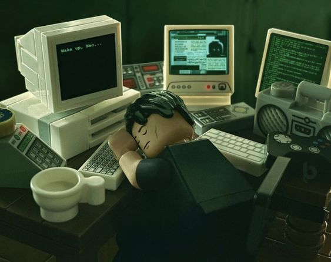

keep on keeping on.
a self-directed study
written & directed by ibnul
house rules
- get in the robot — start first, motivation later
- damn fine coffee required
- read the paper, run the code
- the backlog is a museum: visit, don't live there
the desk
the shelf
drag [ + unsupervised ] to your bookmarks bar — capture any page in one click
the wall
